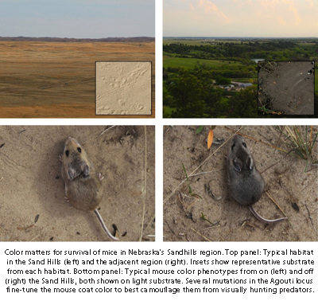

News Archives : 2013 : One Gene, Many Mutations, Contribute to Mouse Survival [Hoekstra Lab]
by Hopi Hoekstra
March 14, 2013
In recent years, a growing number of studies have reported the identity of genes that contribute to phenotypic variation. However, few have narrowed the causative effects down to mutations and the underlying molecular mechanisms, despite the fact that most (if not all) population-genetic models of adaptation are based on mutations and that key parameters, like effect size, dominance and pleiotropy, can only be assigned to mutations (or alleles), not genes.
In a paper that appeared in Science on March 15, the Hoekstra Lab dissected the Agouti locus to show, quite surprisingly, that this large-effect gene fractionates into multiple smaller-effect mutations, each with a specific effect on pigmentation and each with a strong signature of selection. These results have broad implications for understanding the adaptive process.
Our study focuses on a classic story of adaptation – rapid evolution of pigmentation of mice inhabiting the Nebraska Sand Hills – first described by natural historians in the 1940s. In previous work, we mapped a major effect locus, the Agouti signaling protein, and showed that a cis-acting change in gene expression lead to an overall lighter coat color of mice living on the Sand Hills relative to those living off the Sand Hills (Linnen et al. 2009 Science). If we had stopped there, we may have made several incorrect inferences about adaptation, such as: large-effect loci can allow evolution to take large phenotypic leaps, that a single allele had widespread pleiotropic effects on several traits, and that the causal mutation(s) were likely to lie exclusively in the regulatory region. However, by combining field experiments and laboratory-based mapping approach, we genetically dissected the Agouti locus to infer both the molecular and evolutionary mechanisms responsible for naturally occurring color differences. And, in doing so, we make several novel findings:
First, using plasticine mouse models, we show that overall light coloration of mice inhabiting the Sand Hills provides a strong selective advantage against visually hunting predators. This field experiment demonstrates that the derived light color is indeed adaptive in natural conditions. We next show that the overall color difference between mice living on and off the Sand Hills is actually complex, that is, comprised of several distinct pigment traits that can be uncoupled. Using admixture mapping in a natural population, we show that each of the measured color traits is associated with variation in Agouti, but surprisingly, different traits map to different regions of the Agouti locus, and these include both regulatory regions and coding exons. Thus the derived light color of Sand Hills mice is not the result of a single large-effect mutation with pleiotropic effects on many pigment traits, but is due to the accumulation of many mutations each with a smaller phenotypic effect. Importantly, each of the implicated Agouti regions has a specific effect on just one component (i.e., trait) of the overall pigmentation. Thus, what looked like a “pleiotropic gene” in laboratory crosses fractionates into multiple, minimally pleiotropic mutations. Finally, using population-genetic analyses, we also provide evidence for selection on each of the SNPs that are associated with color traits, in the derived light but not ancestral dark alleles, consistent with each of these mutations being a direct target of selection. More generally, these tests at the molecular level come full circle and suggest that each of the measured color traits individually has an effect on fitness acting at the organismal level. It is thus clear that the fine-scale dissection of an adaptive locus to the mutational level provides fundamentally new (and more accurate) insights into the process of adaptation.

Read more in Science or download PDF
Read more in Harvardgazette